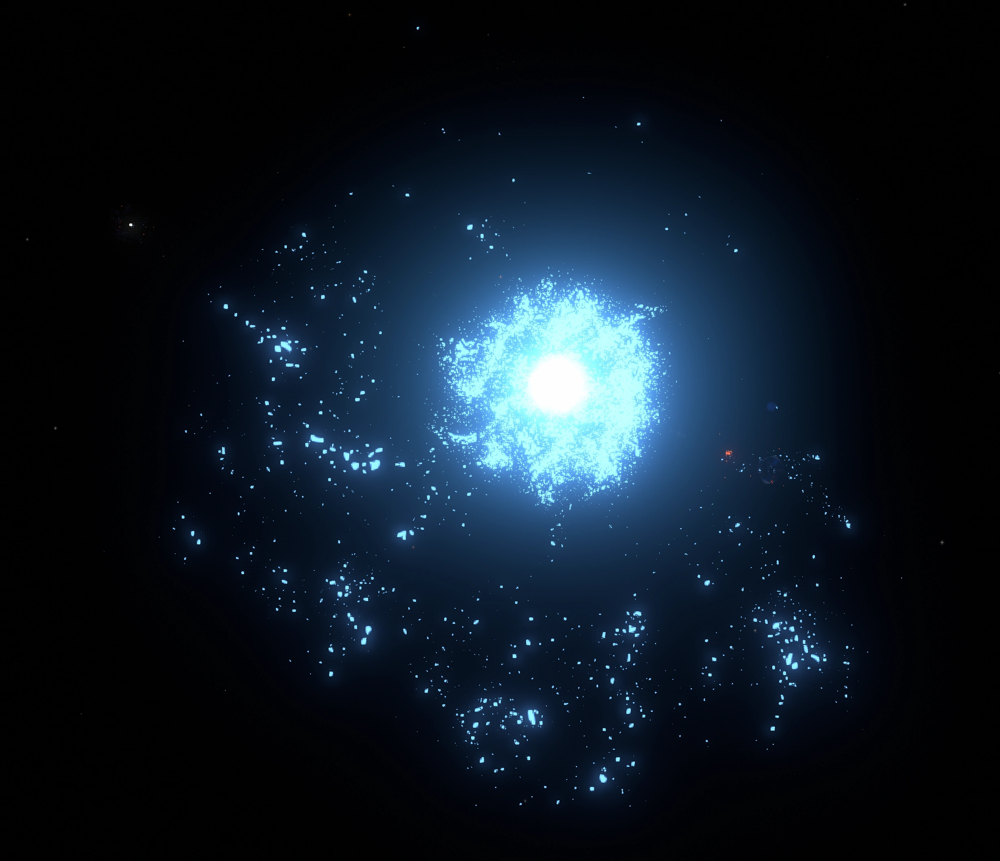
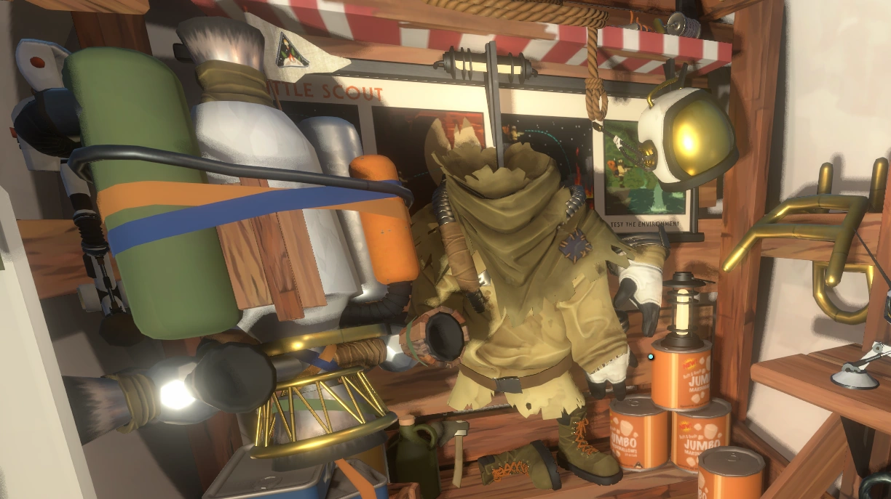
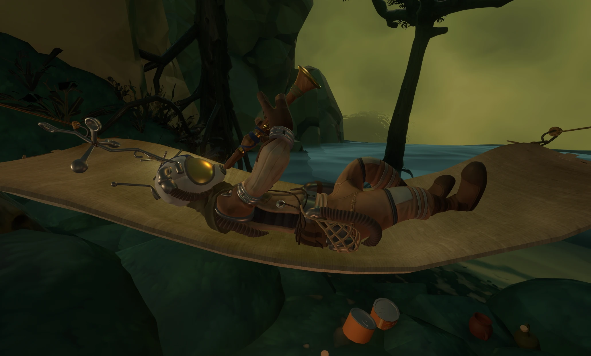
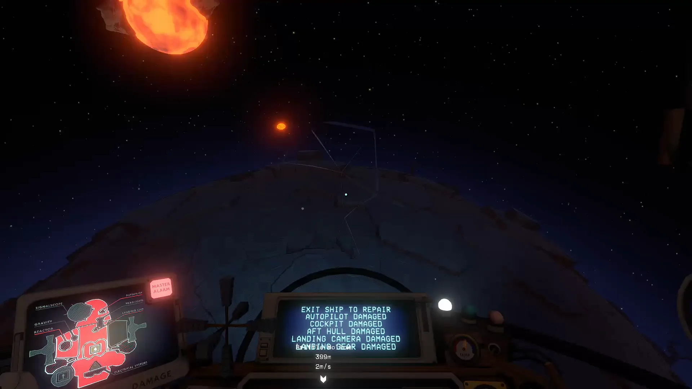
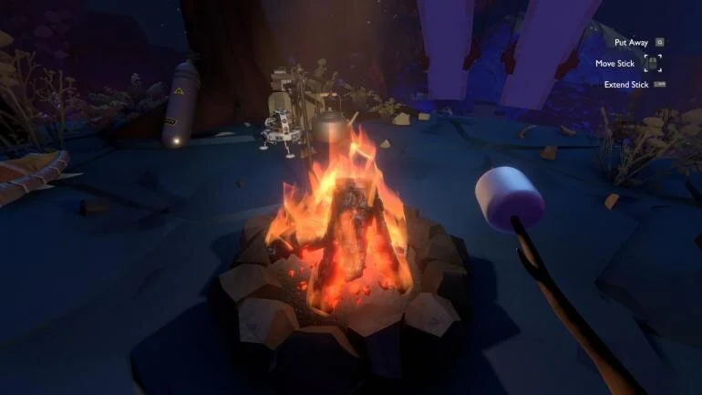
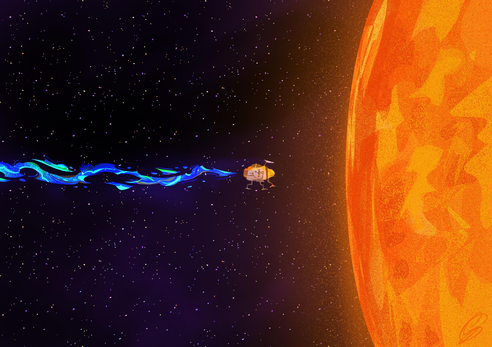
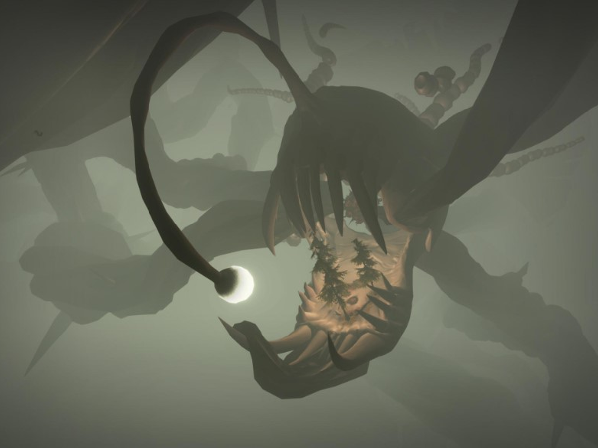
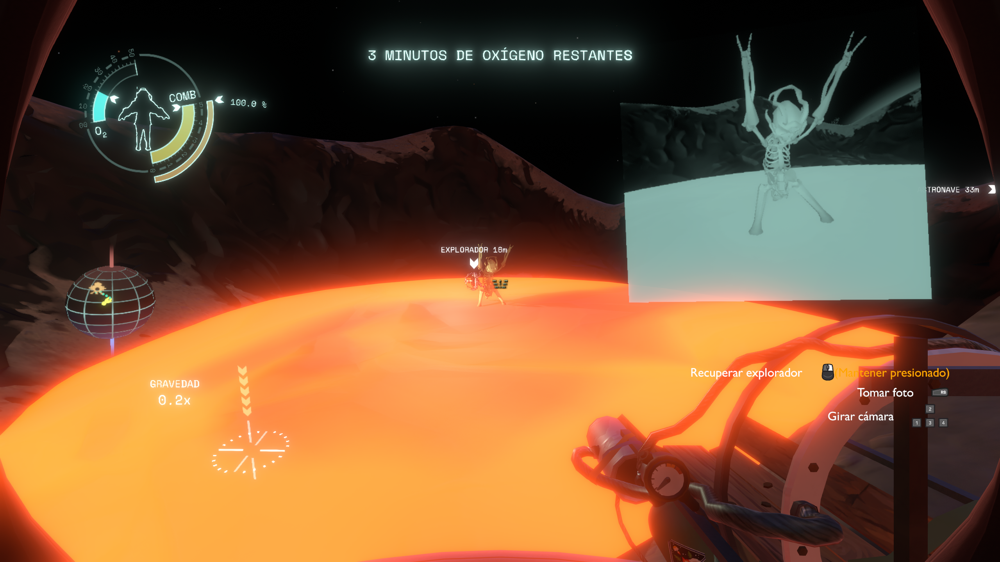

Survival Guide
Despite the name, this section serves as a reminder of what not to do while you're in space. Like really, just don't do it.
Death
Death is inevitable in Outer Wilds. When the player dies, images of their last life flash before their eyes, from their death to the start of them waking up in the Village, where they then respawn.
The player is almost always bound to die at the latest 22 minutes after waking up, as the supernova explodes. The supernova may be outrun by flying far enough from the inner solar system, which technically allows the player to survive, but this will not prevent their memories from being sent back in time and thus the start of a new loop. Most of the time, the player will die before that, as the exploration of the solar system can result in many unplanned deaths through various means. Dying less than 60 seconds after waking up grants an Achievement.
Ways to Die
Death by Supernova
- 
Well, this one is pretty inevitable eh?
Death by suffocation, when the O2 bar reaches 0, Death by suffocation when the player is in space without a suit, or drowning
- 
Really, this one is all about the suit. Wear them properly, alright?
Death During Meditation
- 
This... Is Gabbro's fault. Yep.
Striking a surface with your body at high velocity
- 
Fly safely, folks!
Straying into Ghost Matter

Bro... Use your scout's camera to see the ghost matter bro... Or maybe yeah, that's useless, because some of you just jump in even after seeing them.
Walking on a campfire
- 
One of the reasons why many people don't go camping. But there are those who do this to get an achievement.
Touching thorns

Some of the plants in Ember twin are simply not your friends.
Electrocution

Uh... Wow. Must've been really desperate to solve the puzzle, huh?
Explosion of the ship reactor

Bruh... Fix your ship.
Staying under the sand column on Ember Twin

Nothing like suffocating to death under huge amounts of sand. Most horrible so far.
Fried after falling into the Sun
- 
Most of us did this on autopilot.
Being eaten by an anglerfish
- 
This fish is really scary.
Getting crushed by the rising sand on the Hourglass Twins

Sand again but yeah. Still sucks.
Touching the lava on Hollow's Lantern
- 
Fly me to the moon. Or maybe don't: it has lava.